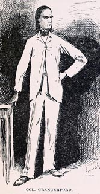
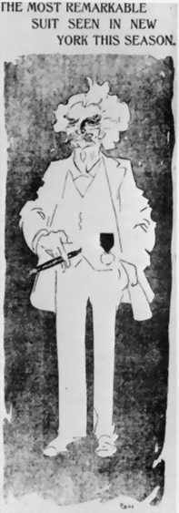

|

"...and every day of his life he put on a clean shirt and a full suit from head to toe made out of linen so white it hurt your eyes to look at it." So wrote Huck Finn, in a passage MT wrote around 1880, about the "aristocratic" Colonel Grangerford (left, as drawn by E. W. Kemble). It wasn't until December, 1906, that MT himself started dressing this way (right). But it seemed so perfect a costume for him that most readers today invariably picture "Mark Twain" in white. When he wrote about the costume in his autobiography, MT gave hygiene as his reason for wearing white. It seemed to appeal to reporters and others mainly as a dramatic instance of his unconventionality. It's not clear whether anyone, including MT, associated the look with the Southern planters whom Samuel Clemens grew up envying and whom MT satirized in figures like Col. Grangerford. He first displayed himself in white at a Congressional hearing on copyright. He insisted on calling attention to the garb, but the reporters present were obviously delighted to publicize the event, to treat MT wearing white as a story the whole nation would be interested in.
|